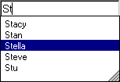
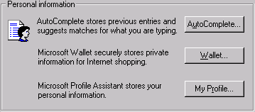
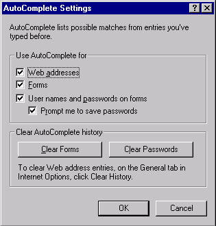

| ||||
HTML forms are a key component to exchanging information between a user and the server. They are common in most visual programming languages, and are used in a variety of implementations on the Web. For example, forms allow users to perform tasks such as searching a Web site, providing feedback, or placing an order.
Microsoft® Internet Explorer 5 and later includes an integrated feature called AutoComplete, which helps users quickly enter information into form fields. The AutoComplete innovation in HTML forms safely stores information entered into INPUT_text and INPUT_password fields. When a user submits a form, the name, value, and domain of the form component are encrypted for safekeeping. Storing the information helps users to complete single-line text fields. The next time that user visits a Web page and begins typing in a text field with the same name, the AUTOCOMPLETE attribute prompts an AutoComplete box to appear, providing the user with a list of previously used data.
An AutoComplete box is the primary interface for presenting data to the user. Until an entry in the AutoComplete box is selected, the data remains on the user's computer and is never accessible to a Web site.
AutoComplete in HTML forms provides the following advantages:
AutoComplete is an easy feature to incorporate into Web sites, and it provides a nonintrusive advantage for Web authors and users. For instance, when the user begins typing in an INPUT field, the AutoComplete box presents a list of suggestions. The list of suggestions is saved in an encrypted store on the user's computer and is not accessible to Web sites. Because the user interface is integrated with the browser, it is streamlined with the Web page and transparent to the user. Individual Web sites do not need to make any changes to their content to use AutoComplete.
AutoComplete encrypts data for the AutoComplete box in a primary data store based on the NAME attribute of the INPUT element. The information is shared among sites that include INPUT elements with the same NAME attribute. Web authors do not have to change the NAME attribute of the field to select what data is displayed by AutoComplete. Instead, the can use the VCARD_NAME attribute, which sets or retrieves the vCard value used by AutoComplete. vCard is a standards-based way to refer to common personal information.
The AutoComplete box appears discretely so as not to obstruct the view of the form. When the box is open, users can select information from the AutoComplete store. For example, a text field for a user's first name produces a list of previously submitted names.

The information is provided from previously submitted field values. It is specified through the vCard schema using the VCARD_NAME attribute, and this allows form fields to be completed without ever typing in a character. The vCard schema is created from the values specified in the Profile Assistant. The vCard schema is implemented when a Web site specifies one of the possible values that correspond to information in the Profile Assistant. The Profile Assistant can be accessed from Internet Explorer by choosing Internet Options on the Tools menu, selecting the Content tab, and then clicking the My Profile button in the Personal Information section.
The AutoComplete box appears when the following circumstances occur:
If the VCARD_NAME attribute is present, the AutoComplete box includes any information from the specified vCard item. Users can change the information listed in the AutoComplete box for text fields with the VCARD_NAME attribute.

Information for the AutoComplete box is provided by the following:
When a user enters information in an INPUT element and submits a form, that information is encrypted and saved in the data store. If the values of the NAME or VCARD_NAME attributes match the data in the data store, that information is provided in the AutoComplete box. A user can quickly travel through an extensive form, because the requested information already is available and only needs to be selected.
AutoComplete is enabled by default in Internet Explorer. Web authors and users do not need to make any special accommodations to use this feature. When a user enters information in an INPUT field and submits the form, the data is saved in the encrypted data store. The next time a user begins typing in an INPUT field with the same name or VCARD_NAME attribute value, the AutoComplete box displays a list of suggestions.
Note The AutoComplete feature is not available in HTML Applications.
The VCARD_NAME attribute draws information from the Profile Assistant as well as from previously entered information. The vCard schema draws information from the Profile Assistant based on the following schema names, each of which is represented by a field in the Profile Assistant.
| vCard.Cellular | vCard.Company | vCard.Department |
| vCard.DisplayName | vCard.Email | vCard.FirstName |
| vCard.Gender | vCard.Home.City | vCard.Home.Country |
| vCard.Home.Fax | vCard.Home.Phone | vCard.Home.State |
| vCard.Home.StreetAddress | vCard.Home.Zipcode | vCard.Homepage |
| vCard.JobTitle | vCard.LastName | vCard.MiddleName |
| vCard.Notes | vCard.Office | vCard.Pager |
| vCard.Business.City | vCard.Business.Country | vCard.Business.Fax |
| vCard.Business.Phone | vCard.Business.State | vCard.Business.StreetAddress |
| vCard.Business.URL | vCard.Business.Zipcode |
The following example demonstrates how the VCARD_NAME attribute and the vCard.Email possible value are used to access and save the AutoComplete information. Rather than looking in the data store for the oEmail field name, the AutoComplete box is populated with values specified for the vCard.Email item.
<INPUT TYPE = text NAME = oEmail VCARD_NAME = "vCard.Email" >
Implementing AutoComplete is easy, but there may be times when either the user or the Web author does not want to use this feature. The AUTOCOMPLETE attribute allows Web authors to selectively disable the AutoComplete feature for a single INPUT element or all INPUT elements in a particular form. For example, by providing a value of off, a particular field or the entire form can be disabled. If a Web author does not want users to see the AutoComplete feature for a password field, the AUTOCOMPLETE attribute can be used to disable the feature for that single field, as in the following example:
<INPUT TYPE = password NAME = oPassword AUTOCOMPLETE = "off" >
In addition, if a Web author does not want users to see the AutoComplete feature for any field in a form, the AUTOCOMPLETE attribute can be used to disable the feature for the entire form.
<FORM AUTOCOMPLETE = "off"> : </FORM>
You can enable AutoComplete by setting the value of the autoComplete property to an empty string.
To determine when a user updates the content of a field from the AutoComplete dialog box, use the onpropertychange event, rather than the onchange event, because the onchange event does not fire.
The AutoComplete Settings dialog box in Internet Explorer also allows users to enable or disable the AutoComplete box, as well as clear previously saved entries. For example, users can use the AutoComplete Settings dialog box in Internet Explorer to enable or disable the AutoComplete feature for forms and addresses, specify whether to include passwords when information is saved, and clear the existing data store.

The AutoComplete box provides several levels of security:
The first time a Web site is made aware of the new information is when the user selects one of the suggested entries and the data is entered into the field.
AutoComplete can be turned off using one of the following options:
The security measures provided for AutoComplete help protect passwords. The AutoComplete feature does not operate in the same fashion with password fields as with regular text fields. When a password is first entered, the user is prompted with the following options:
When the AutoComplete feature is set to save passwords, a password is automatically filled in when a known user name is provided, and the password and user name are stored by URL. When changing passwords, the user is prompted to save the new password.
AutoComplete provides a convenient and safe way for users to quickly complete forms, and for Web sites to enhance user experience on a page. User information saved in the AutoComplete data store is safeguarded, because Web sites cannot automatically fill in forms using the data store, and a login page facade cannot fool the browser into surrendering the information due to domain-specific security.
Did you find this topic useful? Suggestions for other topics? Write us!
© 1999 Microsoft Corporation. All rights reserved. Terms of use.